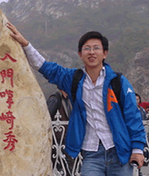

 |
| 人生格言：精诚所致 金石为开
|
| |
相信有很多同事可能对宋维仁都还不太熟悉，但是前线部门的同事一定都对他非常熟悉，是了！他的主要工作就是负责设计、开发前线各个渠道的核心业务系统。
在同各个渠道的沟通中，他总是能耐心细致地为去为各个部门讲解，使我们的核心业务系统可以最大程度地满足各个渠道的需求。并且在开业初期如此繁重的工作压力下，为了使我们的月明星网上投票系统可以如期使用，他只能牺牲自己的个人时间，加班加点的制作网页。从自学搭建投票系统到网页的逐步完善，他投入了大量的精力与热情，在投票网页的设计中，他不厌其烦的一次次修改校正，以使我们的月明星投票系统更为美观化，更具可操作性。对于这些工作他总是充满了积极乐观的心态，可能他的工作比较枯燥，每天对着各种程序编码，但是他总是能让人感觉到工作带给他的乐趣，正是由于他这种享受工作的状态，他带动了很多他周围的同事同他一起全情投入到工作中。
他是IT人的代表，他们是公司核心业务系统的缔造者，他们是公司运营的坚强后盾。
|
|
|